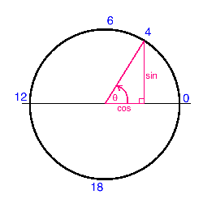

I was browsing twitter yesterday (follow me!) when I came across this tweet by Data Science Renee linking to this Medium article called "Top 6 Errors Novice Machine Learning Engineers Make" by Christopher Dossman. This drew my attention because I'm somewhat new to the field (and even if I weren't, it's always worth reviewing the fundamentals). While I'm not guilty of all six novice mistakes, I'm certainly not innocent either. The most interesting mistake to me was:
"Not properly dealing with cyclical features"¶
Christopher writes:
Hours of the day, days of the week, months in a year, and wind direction are all examples of features that are cyclical. Many new machine learning engineers don’t think to convert these features into a representation that can preserve information such as hour 23 and hour 0 being close to each other and not far.
Yup. I've tried to predict my fair share of quantities using cyclical features incorrectly. Christopher points out that proper handling of such features involves representing the cyclical features as (x,y) coordinates on a circle. In this blog post, I'll explore this feature engineering task and see if it really improves the predictive capability of a simple model.
To begin, let's download a public dataset that has some cyclical qualities. I found a bicycle sharing dataset online (pardon the double entendre) which includes some basic features, with the aim of predicting how many bikes are being used at any given hour. Let's download, unzip, and have a quick look.
!curl -O 'https://archive.ics.uci.edu/ml/machine-learning-databases/00275/Bike-Sharing-Dataset.zip'
!mkdir 'data/bike_sharing/'
!unzip 'Bike-Sharing-Dataset.zip' -d 'data/bike_sharing'
import pandas as pd
df = pd.read_csv('data/bike_sharing/hour.csv')
print df.columns.values
It looks like there are a bunch of features in here that are likely valuable to predict $cnt$, the count of users riding bikes (probably the sum of "casual" riders and "registered" riders). Let's have a look at the $mnth$ (month) feature, and the $hr$ (hour) feature and try to transform them a la Mr. Dossman.
df = df[['mnth','hr','cnt']].copy()
print 'Unique values of month:',df.mnth.unique()
print 'Unique values of hour:',df.hr.unique()
So far, so logical. Months are numbered one through twelve, and hours are numbered 0 through 23.
The Magic¶
Now the magic happens. We map each cyclical variable onto a circle such that the lowest value for that variable appears right next to the largest value. We compute the x- and y- component of that point using $sin$ and $cos$ trigonometric functions. You remember your unit circle, right? Here's what it looks like for the "hours" variable. Zero (midnight) is on the right, and the house increase counterclockwise around the circle. In this way, 23:59 is very close to 00:00, as it should be.

Note that when we perform this transformation for the "month" variable, we also shift the values down by one such that it extends from 0 to 11, for convenience.
import numpy as np
df['hr_sin'] = np.sin(df.hr*(np.pi/24))
df['hr_cos'] = np.cos(df.hr*(np.pi/24))
df['mnth_sin'] = np.sin((df.mnth-1)*(np.pi/12))
df['mnth_cos'] = np.cos((df.mnth-1)*(np.pi/12))
Now instead of hours extending from 0 to 23, we have two new features "hr_sin" and "hr_cos" which each extend from 0 to 1 and combine to have the nice cyclical characteristics we're after.
The claim is that using this transform will improve the predictive performance of our models. Let's give it a shot!
Impact on Model Performance¶
To begin, let's try to use just the nominal hours and month features to predict the number of bikes being ridden. I'll use a basic sklearn neural network and see how well it performs with K-fold cross validation. The loss function I'll use is (negative) mean squared error. I'll also use a standard scaler in an sklearn Pipeline, though it probably isn't necessary given the range in values of our two features.
from sklearn.preprocessing import StandardScaler
from sklearn.neural_network import MLPRegressor
from sklearn.pipeline import Pipeline
# Construct the pipeline with a standard scaler and a small neural network
estimators = []
estimators.append(('standardize', StandardScaler()))
estimators.append(('nn', MLPRegressor(hidden_layer_sizes=(5,), max_iter=1000)))
model = Pipeline(estimators)
# To begin, let's use only these two features to predict 'cnt' (bicycle count)
features = ['mnth','hr']
X = df[features].values
y = df.cnt
# We'll use 5-fold cross validation. That is, a random 80% of the data will be used
# to train the model, and the prediction score will be computed on the remaining 20%.
# This process is repeated five times such that the training sets in each "fold"
# are mutually orthogonal.
from sklearn.model_selection import KFold
from sklearn.model_selection import cross_val_score
kfold = KFold(n_splits=5)
results = cross_val_score(model, X, y, cv=kfold, scoring='neg_mean_squared_error')
print 'CV Scoring Result: mean=',np.mean(results),'std=',np.std(results)
That's a pretty large average MSE, but that's the point. The neural network struggles to interpret month and hour features because they aren't represented in a logical (cyclical) way. These features are more categorical than numerical, which is a problem for the network.
Let's repeat the same exercise, but using the four newly engineered features we created above.
features = ['mnth_sin','mnth_cos','hr_sin','hr_cos']
X = df[features].values
results = cross_val_score(model, X, y, cv=kfold, scoring='neg_mean_squared_error')
print 'CV Scoring Result: mean=',np.mean(results),'std=',np.std(results)
Success! The average MSE improved by over 20% (remember this is negative MSE so the closer to zero the better)!
To be clear, I'm not saying that this model will do a good job at predicting the number of bikes being ridden, but taking this feature engineering step for the cyclical features definitely helped. The model had an easier time interpreting the engineered features. What's nice is that this feature engineering method not only improves performance, but it does it in a logical way that humans can understand. I'll definitely be employing this technique in my future analyses, and I hope you do too.
Love this post? Hate this post? Think I'm an idiot? Let me know in the comments below! I'm always trying to learn new things and hone my data science skills so any feedback is welcome!
Comments !